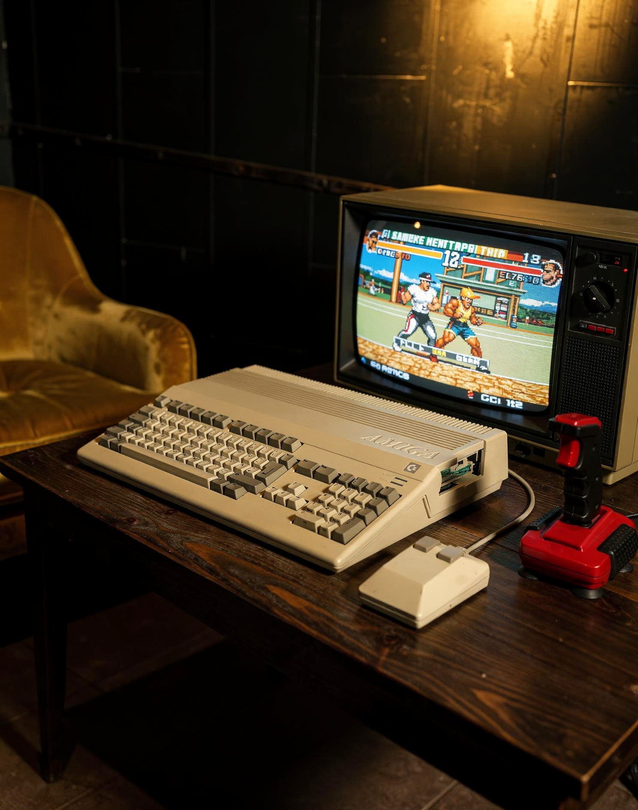

Commodore Amiga 500
Bilgisayar & Yazı
← Koleksiyona dönKişisel bilgisayarın oyun, ses ve görüntüyle kurduğu yaratıcı ilişkinin simgelerinden biri.
Commodore Amiga 500, klavyeyle bütünleşik gövdesi ve kendine özgü grafik-ses kültürüyle 1980’lerin ev bilgisayarı deneyimini temsil ediyor. Amiga ailesi 1985’te New York’taki Lincoln Center’da tanıtılan Amiga 1000 ile başladı; 1987’de gelen Amiga 500 ise platformun oyun, müzik ve görsel üretim dünyasını daha geniş bir kullanıcı kitlesine taşıdı. Bu parça, bilgisayarın yalnız bir çalışma aracı değil, evde keşif ve eğlence merkezi olduğu dönemin güçlü tasarım dilini koruyor.